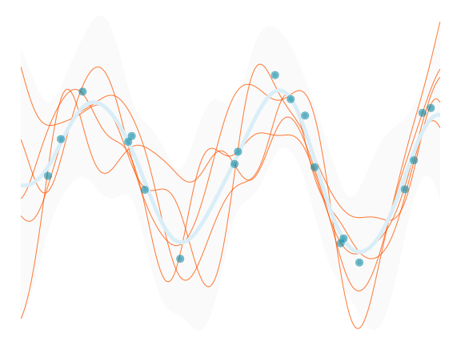
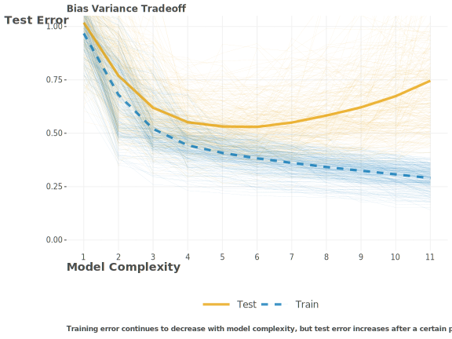
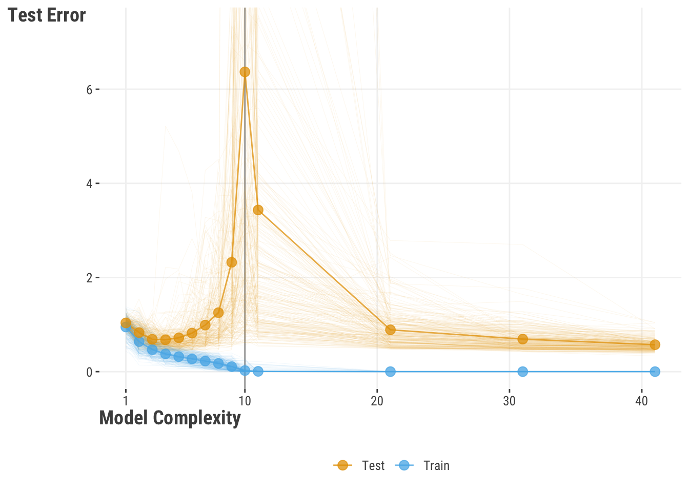
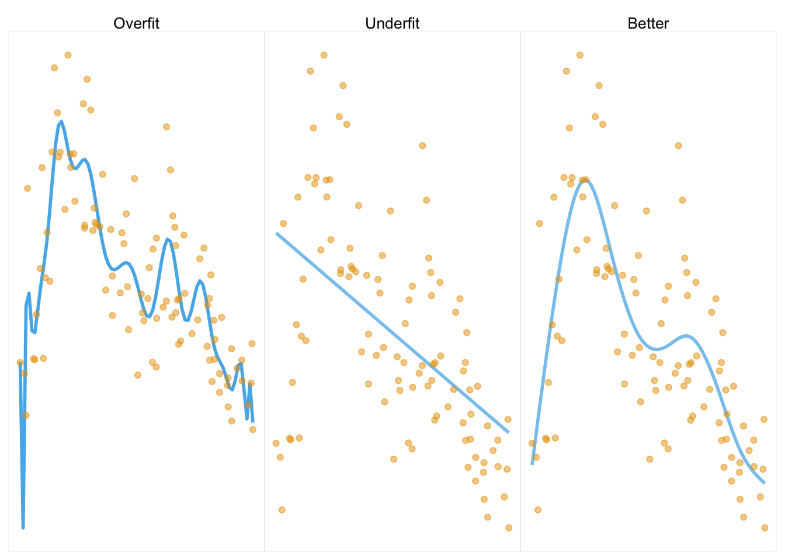
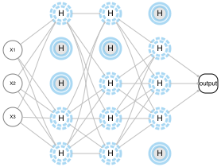
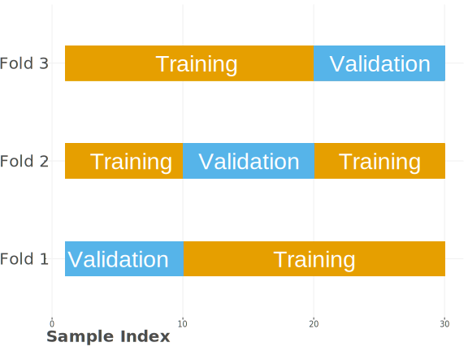
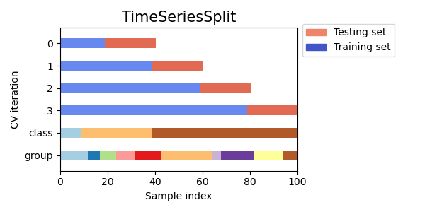

| Objective Function | Description |
|---|---|
| Regression | |
| Mean Squared Error (MSE) | Average of the squared differences between the predicted and actual values. |
| Mean Absolute Error (MAE) | Average of the absolute differences between the predicted and actual values. |
| Huber Loss | A robust approach that is less sensitive to outliers than MSE. |
| Log Likelihood | Maximizes the likelihood of the data given the model parameters. |
| Classification | |
| Binary Cross-Entropy / Log Likelihood (Loss) | Used for binary classification problems. Same as log-likelihood . |
| Categorical Cross-Entropy | Binary approach extended to multi-class classification problems. |
9 Core Concepts in Machine Learning

Machine learning is used everywhere, and allows us to do things that would have been impossible just a couple decades ago. It is used in everything from self-driving cars, to medical diagnosis, to predicting the next word in your text message. The ubiquity of it is such that machine learning and related adventures like artificial intelligence are used as buzzwords, and it is not always clear what it meant by the one speaking them. In this chapter we hope you’ll come away with a better understanding of what machine learning is, and how it can be used in your own work.
At its core, machine learning is a branch of data analysis with a primary focus on predictive performance. Honestly, that’s pretty much it from a practical standpoint. It is not a subset of particular types of models, it does not prohibit using statistical models, it doesn’t mean that a program spontaneously learns without human involvement1, it doesn’t necessarily have anything to do with ‘machines’ outside of laptop, and it doesn’t even mean that the model is particularly complex. Machine learning is a set of tools and a modeling approach that attempts to improve and generalize model performance2.
This is a different focus than statistical modeling approaches that put much more emphasis on interpreting coefficients and uncertainty. But these two approaches can work together. Some implementations of machine learning include models that have their basis in traditional statistics, while others are often sufficiently complex that they are scarcely interpretable. However, even after you conduct your modeling via machine learning, you may still fall back on statistical analysis for further exploration of the results.
That said, here we will also discuss some of the key ideas in machine learning, such as model assessment, loss functions, and cross-validation. Later we’ll demonstrate common models used, but if you want to dive in, you can head there now!
9.1 Key Ideas
Here are the key ideas we’ll cover in this chapter:
- Machine learning is an approach that prioritizes making accurate predictions using a variety of tools and methods.
- Models used in machine learning are typically more complex and difficult to interpret than those used in standard statistical models. However, any model can be used with ML.
- There are many performance metrics used in machine learning, and care should be taken to choose the appropriate one for your situation. You can also use multiple performance metrics to evaluate a model.
- Objective functions likewise should be chosen for the situation, and are often different from the performance metric.
- Regularization is a general approach to penalize complexity in a model, and is typically used to improve generalization.
- Cross-validation is a technique that helps us choose parameters for our models and compare different models.
9.1.1 Why this matters
Machine learning applications help define the modern world and how we interact with it. There are few aspects of modern society that have not been touched by it in some way. With a basic understanding of the core ideas behind machine learning, you will better understand the models and techniques that are used in ML applications, and be able to apply them to your own work. You’ll also be able to understand the limitations of these models, and not think of machine learning as ‘magic’.
9.1.2 Helpful context
To dive into applying machine learning models, you really only need a decent grasp of linear models as applied to regression and classification problems (Chapter 3, Chapter 7). It would also be good to have an idea behind how they are estimated, as the same basic logic serves as a starting point here (Chapter 6).
9.2 Objective Functions
We’ve implemented a variety of objective functions in other chapters such as mean squared error for numeric targets and log loss for binary targets (Chapter 6). The objective function is what we used to estimate model parameters, but not necessarily the same as the performance metric we ultimately use to select a model. For example, we may use log loss as the objective function, but then use accuracy as the performance metric. In that setting, the log loss provides a ‘smooth’ objective function to search the parameter space over, while accuracy is a straightforward and more interpretable metric for stakeholders. In this case, the objective function is used to optimize the model, while the performance metric is used to evaluate the model. In some cases, the objective function and performance metric are the same (e.g. (R)MSE), and even if not, they might have selected the same ‘best’ model, but this is not always the case.
For specific types of tasks and models you might use something else, but the table will suffice to get you started with many common settings. Even when dealing with different types of targets, such as counts, proportions, etc., one can use an appropriate likelihood objective, which allows you to cover a bit more ground.
9.3 Performance Metrics
When discussing how to understand our model (Section 4.2), we noted there are many performance metrics used in machine learning. Care should be taken to choose the appropriate one for your situation. Usually we have a standard set we might use for the type of predictive problem. For example, for numeric targets, we typically are interested in (R)MSE and MAE. For classification problems, many metrics are based on the confusion matrix, which is a table of the predicted classes versus the observed classes. From that we can calculate things like accuracy, precision, recall, AUROC, etc. (refer to Table 4.1).
As an example, and as a reason to get our first taste of machine learning, let’s get some metrics for a movie review model. Depending on the tool used, getting one type of metric should be as straightforward as most others if we’re using common metrics. As we start our journey into machine learning, we’ll show Python code first, as it’s the dominant tool. Here we’ll model the target in both numeric and binary form with corresponding metrics.
In Python, we can use the sklearn.metrics module to get a variety of metrics for both regression and classification problems.
from sklearn.metrics import (
mean_squared_error, root_mean_squared_error,
mean_absolute_error, r2_score,
accuracy_score, precision_score, recall_score,
roc_auc_score, roc_curve, auc, confusion_matrix
)
from sklearn.linear_model import LinearRegression, LogisticRegression
import pandas as pd
df_reviews = pd.read_csv('https://tinyurl.com/moviereviewsdata')
X = df_reviews[
[
'word_count',
'age',
'review_year',
'release_year',
'length_minutes',
'children_in_home',
'total_reviews',
]
]
y = df_reviews['rating']
y_class = df_reviews['rating_good']
model_lin_reg = LinearRegression().fit(X, y)
# note that sklearn uses regularization by default for logistic regression
model_log_reg = LogisticRegression().fit(X, y_class)
y_pred_linreg = model_lin_reg.predict(X)
y_pred_logreg = model_log_reg.predict(X)
# regression metrics
rmse = root_mean_squared_error(y, y_pred_linreg)
mae = mean_absolute_error(y, y_pred_linreg)
r2 = r2_score(y, y_pred_linreg)
# classification metrics
accuracy = accuracy_score(y_class, y_pred_logreg)
precision = precision_score(y_class, y_pred_logreg)
recall = recall_score(y_class, y_pred_logreg)In R, we can use mlr3measures, which has a variety of metrics.
library(mlr3measures)
# convert rating_good to factor for some metric inputs
df_reviews = read_csv('https://tinyurl.com/moviereviewsdata') |>
mutate(rating_good = factor(rating_good, labels = c('bad', 'good')))
model_lin_reg = lm(
rating ~
word_count
+ age
+ review_year
+ release_year
+ length_minutes
+ children_in_home
+ total_reviews,
data = df_reviews
)
model_log_reg = glm(
rating_good ~
word_count
+ age
+ review_year
+ release_year
+ length_minutes
+ children_in_home
+ total_reviews,
data = df_reviews,
family = binomial(link = 'logit')
)
y_pred_linreg = predict(model_lin_reg)
y_pred_logreg = predict(model_log_reg, type = 'response')
y_pred_logreg = factor(ifelse(y_pred_logreg > .5, 'good', 'bad'))
# regression metrics
rmse_val = rmse(df_reviews$rating, y_pred_linreg)
mae_val = mae(df_reviews$rating, y_pred_linreg)
r2_val = rsq(df_reviews$rating, y_pred_linreg)
# classification metrics
accuracy = acc(df_reviews$rating_good, y_pred_logreg)
precision = precision(df_reviews$rating_good, y_pred_logreg, positive = 'good')
recall = recall(df_reviews$rating_good, y_pred_logreg, positive = 'good')We put them all together in the following table. Now we know how to get them, and it was easy! But as we’ll see later, there is a lot more to think about before we use these for model assessment.
| Metric | Value |
|---|---|
| Linear Regression | |
| RMSE | 0.52 |
| MAE | 0.41 |
| R-squared | 0.32 |
| Logistic Regression | |
| Accuracy | 0.71 |
| Precision | 0.72 |
| Recall | 0.79 |
9.4 Generalization
Getting metrics is easy enough, but how will we use them? One of the key differences separating ML from traditional statistical modeling approaches is the assessment of performance on unseen or future data, a concept commonly referred to as generalization. The basic idea is that we want to build a model that will perform well on new data, and not just the data we used to train the model. This is because ultimately data is ever evolving, and we don’t want to be beholden to a particular set of data we just happened to have at a particular time and context.
But how do we do this? As a starting point, we can simply split (often called partitioning) our data into two sets, a training set and a test set, often called a holdout set. The test set is typically a smaller subset, say 25% of the original data, but this amount is arbitrary, and will reflect the data situation. We fit or train the model on the training set, and then use the model to make predictions on, or score, the test set. This general approach is also known as the holdout method. Consider a simple linear regression. We can fit the linear regression model on the training set, which provides us coefficients, etc. We can then use that model result to predict on the test set, and then compare the predictions to the observed target values in the test set. Here we demonstrate this with our simple linear model.
from sklearn.model_selection import train_test_split
X = df_reviews[[
'word_count',
'age',
'review_year',
'release_year',
'length_minutes',
'children_in_home',
'total_reviews',
]]
y = df_reviews['rating']
X_train, X_test, y_train, y_test = train_test_split(
X,
y,
test_size=0.25,
random_state=123
)
model_linreg_train = LinearRegression().fit(X_train, y_train)
# get predictions
y_pred_train = model_linreg_train.predict(X_train)
y_pred_test = model_linreg_train.predict(X_test)
# get RMSE
rmse_train = root_mean_squared_error(y_train, y_pred_train)
rmse_test = root_mean_squared_error(y_test, y_pred_test)
pd.DataFrame(
dict(
prediction = ['Train', 'Test'],
rmse = [rmse_train, rmse_test]
)
).round(3)# create a train and test set
library(rsample)
set.seed(123)
split = initial_split(df_reviews, prop = .75)
X_train = training(split)
X_test = testing(split)
model_linreg_train = lm(
rating ~
word_count
+ age
+ review_year
+ release_year
+ length_minutes
+ children_in_home
+ total_reviews,
data = X_train
)
# get predictions
y_train_pred = predict(model_linreg_train, newdata = X_train)
y_test_pred = predict(model_linreg_train, newdata = X_test)
# get RMSE
rmse_train = rmse(X_train$rating, y_train_pred)
rmse_test = rmse(X_test$rating, y_test_pred)
tibble(
prediction = c('Train', 'Test'),
rmse = c(rmse_train, rmse_test)
)| prediction | rmse |
|---|---|
| Train | 0.510 |
| Test | 0.545 |
So there you have it, you just did some machine learning! And now we have a model that we can use to predict with any new data that comes along with ease. But as we’ll soon see, there are limitations to doing things this simply. But conceptually this is an important idea, and one we will continue to return to.
9.4.1 Using metrics for model evaluation and selection
As we’ve seen elsewhere, there are many performance metrics to choose from to assess model performance, and the choice of metric depends on the type of problem (Section 4.2). It also turns out that assessing the metric on the data we used to train the model does not give us the best assessment of that metric. This is because the model will do better on the data it was trained on than on new data it wasn’t trained on, and we can generally always improve that metric in training by making the model more complex. However, in many modeling situations, this complexity comes at the expense of generalization. So what we really want to ultimately say about our model will regard performance on the test set with our chosen metric, and not the data we used to train the model. At that point, we can also compare multiple models to one another given their performance on the test set, and select the one that performs best.
In the previous section you can compare our results on the tests vs. training set. Metrics are notably better on the training set on average, and that’s what we see here. But since we should be more interested in how well the model will do on new data, we use the test set to get a sense of that.
9.4.2 Understanding test error and generalization
This part gets into the weeds a bit. If you are not so inclined, skip to the summary of this section.
In the following discussion, you can think of a standard linear model scenario, e.g. with squared-error loss function, and a data set where we split some of the observations in a random fashion into a training set, for initial model fitting, and a test set, which will be kept separate and independent, and used to measure generalization performance. We note training error as the average loss over all the training sets we could create in this process of random splitting. The test error is the average prediction error obtained when a model fitted on the training data is used to make predictions on the test data.
9.4.2.1 Generalization in the classical regime
So what result should we expect in this scenario? Let’s look at the following visualization inspired by Hastie, Tibshirani, and Friedman (2017), and which we will return to later.

Prediction error on the test set is a function of several components, and two of these are bias and variance.
A key idea is that as the model complexity increases, we potentially capture more of the data variability. This reduces bias, which is the difference in our average prediction and the true model prediction. But this only works for training error, where eventually our model can potentially fit the training data perfectly!
For test error though, as the model complexity increases, the bias decreases, but the variance eventually increases. This variance reflects how much our prediction changes with different data. If our model gets too cozy with the training data, it will do poorly when we try to generalize beyond it, and this will be reflected in increased variance. This is traditionally known as the bias-variance tradeoff - we can reduce one source of error in the test set at the expense of the other, but not both at the same time indefinitely. In other words, we can reduce bias by increasing model complexity, but this will eventually increase variance in our test predictions. We can reduce variance by reducing model complexity, but this will increase bias. One additional thing to note is that even if we had the ‘true’ model given the features specified correctly, for the vast majority of cases there would still be prediction error due to the random data generating process (noise). This can potentially be reduced using additional valid features, getting better measurements, etc., but it will still be there to some extent in practice, and so will limit test set performance.
The ultimate goal is to find the sweet spot. We want a model that’s complex enough to capture the data, but not so complex that it overfits to the training data.
Generalization in deep learning
It turns out that with lots of data and very complex models, or maybe even in most settings, our ‘classical’ understanding just described doesn’t hold up. In fact, it is possible to get a model that fits the training data perfectly, and yet ultimately still generalizes well to new data!
This phenomenon is encapsulated in the notion of double descent. The idea is that, with overly complex models such as those employed with deep learning, we can get to the point of interpolating the data exactly. But as we continue to increase the complexity of the model, we actually start to generalize better again, as the model continues to explore potential options for fitting the data. This is a fascinating and somewhat counterintuitive result, and visually this displays as a ‘double descent’ in terms of test error. We see an initial decrease in test error as the model gets better in general. After a while, it begins to rise as we would expect in the classical regime (Figure 9.1). Eventually it peaks at the point where we have as many parameters as data points. Beyond that however, as we get even more complex with our model, we can possibly see a decrease in test error again3. Crazy!
We can demonstrate this on the classic mtcars dataset4, which has only 32 observations! We repeatedly trained a model to predict miles per gallon on only 10 of those observations, and assess test error on the rest. The model we used is a form of ridge regression, but we implemented splines for the car’s weight, horsepower, and displacement5, i.e. we GAMed it up (Section 8.4). We trained increasingly complex models, and in what follows we visualize the error as a function of model complexity.
On the left part of the visualization, we see that the test error dips as we get a better model. Our best test error is noted by the large gray dot. Eventually though, the test error rises as expected, even as training error gets better. Test error eventually hits a peak when the number of parameters equals the number of training observations. But then we keep going, and the test error starts to decrease again! By the end we have essentially perfect training prediction, and our test error is as good as it was with the simpler models. This is the double descent phenomenon with one of the simplest datasets around. Cool!

9.4.2.2 Generalization summary
The take home point is this: our primary concern is generalization error. We can reduce this error by increasing model complexity, but this may eventually cause test error to increase. However, with enough data and model complexity, we can get to the point where we can fit the training data perfectly, and yet still generalize well to new data. In many standard or at least smaller data and model settings, you can maybe assume the classical regime holds. But when employing deep learning with massive data and billions of parameters, you can worry less about the model’s complexity. But no matter what, we should use tools to help make our model work better, and we prefer smaller and simpler models that can do as well as more complex ones, even if those ‘smaller’ models are still billions of parameters!
9.5 Regularization
We now are very aware that a key aspect of the machine learning approach is having our model to work well with new data. One way to improve generalization is through the use of regularization, which is a general approach to penalize complexity in a model, and is typically used to prevent overfitting. Overfitting occurs when a model fits the training data very well, but does not generalize well to new data. This usually happens when the model is too complex and starts fitting to random noise in the training data. We can also have the opposite problem, where the model is too simple to capture the patterns in the data, and this is known as underfitting6.
In the following demonstration, the first plot shows results from a model that is probably too complex for the data setting. The curve is very wiggly as it tries as much of the data as possible, and is an example of overfitting. The second plot shows a straight line fit as we’d get from linear regression. It’s too simple for the underlying feature-target relationship, and is an example of underfitting. The third plot shows a model that is a better fit to the data, and is an example of a model that is complex enough to capture the nonlinear aspect of the data, but not so complex that it capitalizes on a lot of noise.

When we examine generalization performance7, we see that the overfit model does best on training data, but relatively very poorly on test- nearly a 20% increase in the RMSE value. The underfit model doesn’t change as much in test performance because it was poor to begin with, and is the worst performer for both. Our ‘better’ model wasn’t best on training, but was best on the test set.
| Model | RMSE | % change |
|---|---|---|
| Train | ||
| Better | 2.18 | |
| Over | 1.97 | |
| Under | 3.05 | |
| Test | ||
| Better | 2.19 | 0.6 |
| Over | 2.34 | 19.1 |
| Under | 3.24 | 6.1 |
A fairly simple example of regularization can be seen with a ridge regression model (Section 6.8), where we add a penalty term to the objective function. The penalty is a function of the size of the coefficients, and helps keep the model from getting too complex. It is also known as L2 regularization due to squaring the coefficients. Another type is the L1 penalty, used in the ‘lasso’ model, which is based on the absolute values of the coefficients. Yet another common approach combines the two, called elastic net. There we adjust the balance between the L1 and L2 penalties, and use cross-validation to find the best balance. L1 and/or L2 penalties are applied in many other models such as gradient boosting, neural networks, and others, and are a key aspect of machine learning.
Regularization is used in many modeling scenarios. Here is a quick rundown of some examples.
GAMs use penalized regression for estimation of the coefficients for the basis functions (typically with L2). This keeps the ‘wiggly’ part of the GAM from getting too wiggly, as in the overfit model in Figure 9.3. This shrinks the feature-target relationship toward a linear one.
Similarly, the variance estimate of a random effect in mixed models, e.g. for the intercept or slope, is inversely related to an L2 penalty on the effect estimates for that group effect. The more penalization applied, the less random effect variance, and the more the random effect is shrunk toward the overall mean8.
Still another form of regularization occurs in the form of priors in Bayesian models. There we use priors to control the influence of the data on the final model. A small variance on the prior shrinks the model towards the prior mean. If large, there is little influence of the prior on the posterior. In regression models, there is correspondence between ridge regression and using a normal distribution prior for the coefficients in Bayesian regression, where the L2 penalty is related to the variance of that prior. Even in deep learning, there is usually a ‘Bayesian interpretation’ of the regularization approaches employed.
As a final example of regularization, dropout is a technique used in deep learning to prevent overfitting. Feel free to return to this discussion after seeing neural networks in action in the next chapter(Section 10.7), as that will provide the appropriate context. But the gist of dropout is that it works by randomly dropping out some of the nodes in intervening/hidden layers in the network during training. This tends to force the network to learn more robust features, allowing for better generalization.

In the end, regularization comes in many forms across the modeling landscape, and is a key aspect of machine learning and traditional statistical modeling alike. The primary goal is to decrease model complexity in the hopes of increasing our ability to generalize the selected model to new data scenarios.
9.6 Cross-validation
So we’ve talked a lot about generalization, so now let’s think about some ways to go about a general process of selecting parameters for a model and assessing performance.
We previously used a simple approach where we split the data into training and test sets, fitted the model on the training set, and then assessed performance on the test set. This is fine, but the test set error, or any other metric, has uncertainty. It would be slightly different with any training-test split we came up with.
We’d also like to get better model assessment when searching the parameter space, because there are parameters for which we have no way of guessing the value beforehand, and we’ll need to try out different ones. An example would be the penalty parameter in lasso regression. In this case, we need to figure out the best parameters before assessing a final model’s performance.
One way to do this is to split the training data into different partitions, which we now call validation sets. We fit the model on the training set, and then assess performance on the validation set(s). We then repeat this process for many different splits of the data into training and validation sets, and average the results. This is known as K-fold cross-validation. It’s important to note that we still want a test set to be held out that is in no way used during the training process. The validation sets are used to help us choose the best model based on some metric, and the test set is used to assess the final model’s performance.
Here is a visualization of 3-fold cross validation. We split the data such that 2/3 of it will be used for training, and 1/3 for validation. We then do this for a total of 3 times, so that the validation set is on a different part of the data each time, and all observations are used for both training and validation at some point. We then average the results of any metric across the validation sets. Note that in each case here, there is no overlap of data between the training and validation sets.

The idea is that we are trying to get a better estimate of the error by averaging over many different validation sets. The number of folds, or splits, is denoted by \(K\). The value of \(K\) can be any number, but typically is 10 or less. The larger the value of \(K\), the more accurate the estimate of the metric, but the more computationally expensive it is, and in application, you generally don’t need much to get a good estimate. However, with smaller datasets, one can even employ a leave-one-out approach, where \(K\) is equal to the number of observations in the data.
So cross-validation provides a better measure of the metric we use to choose our model. When comparing a model with different parameter settings, we can look at the (average) metric each has from the validation process, and select the model parameter set that has the best metric value. This process is typically known as model selection. This works for choosing a model across different sets of hyperparameter settings, for example, with different penalty parameters for regularized regression. But can also aid in choosing a model from a set of different model types, for example, standard linear model approach vs. boosting. In that case we apply the cross-validation approach for each model, and the ‘winner’ is the one with the best average metric value on the test set.
Now how might we go about this for modeling purposes? Very easily with modern packages. In the following we demonstrate cross-validation with a logistic regression model.
from sklearn.linear_model import LogisticRegressionCV
X = df_reviews.filter(regex='_sc$') # grab the standardized features
y = df_reviews['rating_good']
# Cs is the (inverse) penalty parameter;
model_logistic_l2 = LogisticRegressionCV(
penalty='l2', # penalty type
Cs=[1], # penalty parameter value
cv=5,
max_iter=1000,
verbose=False
).fit(X, y)
# model_logistic_l2.scores_ # show the accuracy score for each fold
# print the average accuracy score
model_logistic_l2.scores_[1].mean()0.671For R, we prefer mlr3 for our machine learning demonstrations, as we feel it is more like sklearn in spirit, as well as offering computational advantages for when you want to actually do ML with R9. The tidymodels ecosystem is also a good option.
library(mlr3)
library(mlr3learners)
X = df_reviews |>
select(matches('_sc|good')) # grab the standardized features/target
# Define task
task_lr_l2 = TaskClassif$new('movie_reviews', X, target = 'rating_good')
# Define learner (alpha = 0 is ridge/l2 regression)
learner_lr_l2 = lrn('classif.cv_glmnet', alpha = 0, predict_type = 'response')
# set the penalty parameter to some value
learner_lr_l2$param_set$values$lambda = c(.1, .2)
# Define resampling strategy
model_logistic_l2 = resample(
task = task_lr_l2,
learner = learner_lr_l2,
resampling = rsmp('cv', folds = 5),
store_models = TRUE
)
# show the accuracy score for each fold
# model_logistic_l2$score(msr('classif.acc'))
model_logistic_l2$aggregate(msr('classif.acc'))classif.acc
0.656 From the five validation sets, we end up with five separate accuracy values, one for each fold. Our final assessment of the model’s accuracy is the average of these five values, which is shown. This is a better estimate of the model’s accuracy than if we had just used a single test of the model, and in the end it is still based on the entire training data.
9.6.1 Methods of cross-validation
There are different approaches we can take for cross-validation that we may need for different data scenarios. Here are some of the more common ones.
- Shuffled: Shuffling prior to splitting can help avoid data ordering having undue effects.
- Grouped/stratified: In cases where we want to account for the grouping of the data, e.g. for data with a hierarchical structure. We may want groups to appear in training or test, but not both, as with grouped k-fold. Or we may want to ensure group proportions across training and test sets, as with stratified k-fold.
- Time-based: for time series data, where we only want to assess error on future values
- Combinations: For example, grouped and time-based
Here are images from the scikit-learn library documentation depicting some different cross-validation approaches. In general, the type we use will be based on our data needs.



9.7 Tuning
One problem with the previous ridge logistic model we just used is that we set the penalty parameter to a fixed value. We can do better by searching over a range of values instead, and picking a ‘best’ value based on which model performs to our liking. This is generally known as hyperparameter tuning, or simply tuning. We can do this with k-fold cross-validation to assess the error for each value of the penalty parameter values. We then select the value of the penalty parameter that gives the lowest average error. This is a form of model selection.
Another potential point of concern is that we are using the same data to both select the model and assess its performance. This is a form of a more general phenomenon of data leakage, and may result in an overly optimistic assessment of performance. One solution is to do as we’ve discussed before, which is to split the data into three parts: training, validation, and test. We use the training set(s) to fit the model, assess their performance on the validation set(s), and select the best model. Then finally we use the test set to assess the best model’s performance. So the validation approach is used to select the model, and the test set is used to assess that model’s performance. The following visualizations from the scikit-learn documentation illustrates the process.


9.7.1 A tuning example
While this may start to sound complicated, it doesn’t have to be, as tools are available to make our generalization journey a lot easier. In the following we demonstrate this with the same ridge logistic regression model. The approach we use is called a grid search, where we explicitly step through potential values of the penalty parameter, fitting a model with the selected value through cross-validation. While we only look at one parameter here, for a given modeling approach we could construct a ‘grid’ of sets of parameter values to search over as well10. For each hyperparameter value, we are interested in the average accuracy score across the folds to assess the best performance. The final model can then be assessed on the test set11
Again we use the LogisticRegression function in sklearn to perform k-fold cross-validation to select the best penalty parameter. We then apply the best model to the test set and calculate accuracy. We do the same thing in R with the mlr3tuning package.
from sklearn.model_selection import GridSearchCV
# split the dataset into training and test sets
X_train, X_test, y_train, y_test = train_test_split(
X,
y,
test_size=0.25,
random_state=42
)
# define the parameter values for GridSearchCV
param_grid = {
'C': [0.1, 1, 2, 5, 10, 20],
}
# perform k-fold cross-validation to select the best penalty parameter
# Note that LogisticRegression by default is ridge regression for scikit-learn
model_logistic_grid = GridSearchCV(
LogisticRegression(),
param_grid=param_grid,
cv=5,
scoring='accuracy'
).fit(X_train, y_train)
# if you want to inspect
best_model = model_logistic_grid.best_estimator_
best_param = model_logistic_grid.best_params_['C']
# apply the best model to the test set and calculate accuracy
acc_train = model_logistic_grid.score(X_train, y_train)
acc_test = model_logistic_grid.score(X_test, y_test)Best C: 2
Accuracy on train set: 0.661
Accuracy on test set: 0.692We use the auto_tuner function to perform k-fold cross-validation to select the best penalty parameter (lambda). We set the mixing parameter (alpha) to zero so that we are only using ridge regression. See the glmnet vignette for details.
# Load necessary libraries
# library(mlr3verse)
# library(paradox) # for tuning
library(mlr3)
library(mlr3learners)
library(mlr3tuning) # for tuning
library(rsample) # for cross validation
X = df_reviews |>
mutate(rating_good = as.factor(rating_good)) |>
select(matches('sc|rating_good')) |>
as.data.table()
# Define task
task = TaskClassif$new('movie_reviews', X, target = 'rating_good', positive = 'good')
# split the dataset into training and test sets
splits = partition(task, ratio = 0.75)
# Define learner
learner = lrn('classif.glmnet', alpha = 0, predict_type = 'response')
# Define resampling strategy
cv_k5 = rsmp('cv', folds = 5)
# Define measure
measure = msr('classif.acc')
# Define parameter space
param_set = ParamSet$new(list(
lambda = p_dbl(lower = 1e-3, upper = 1)
))
# Define tuner
model_logistic_grid = auto_tuner(
learner = learner,
resampling = cv_k5,
measure = measure,
search_space = param_set,
tuner = tnr('grid_search', resolution = 10),
terminator = trm('evals', n_evals = 10)
)
# Tune hyperparameters
model_logistic_grid$train(task, row_ids = splits$train)
# Get best hyperparameters
best_param = model_logistic_grid$model$learner$param_set$values
# Use the best model to predict and get metrics
acc_train = model_logistic_grid$predict(task, row_ids=splits$train)$score(measure)
acc_test = model_logistic_grid$predict(task, row_ids=splits$test)$score(measure)Best lambda: 0.223
Accuracy on train set: 0.681333333333333
Accuracy on test set: 0.684So there you have it. We searched the parameter space, chose the best set of parameters via k-fold cross validation, and got an assessment of generalization error. Neat!
9.7.2 Parameter spaces
In the previous example, we used a grid search to search over a range of values for the penalty parameter. It is a quick and easy way to get started, but generally we want something that can search a better space of parameter values rather than a limited grid. It can also be computationally expensive with many hyperparameters, as we might have with boosting methods. We can do better by using more efficient approaches. For example, we can use a random search, where we randomly sample from the parameter space. This is generally faster than a grid search, and can be just as effective. Other methods are available that better explore the space and do so more efficiently.
9.8 Pipelines
For production-level work, or just for reproducibility, it is often useful to create a pipeline for your modeling work. A pipeline is a series of steps that are performed in sequence. For example, we might want to perform the following steps:
- Impute missing values
- Transform features
- Create new features
- Split the data into training and test sets
- Fit the model on the training set
- Assess the model’s performance on the test set
- Compare the model with others
- Save the ‘best’ model
- Use the model for prediction on future data, sometimes called scoring
- Redo the whole thing on a regular basis
We can create a pipeline that performs all of these steps in sequence. This is useful for a number of reasons:
- Using a pipeline makes it far easier to reproduce the results as needed. Running the pipeline means you are running each of the same exact steps in the same exact order.
- It is relatively easy to change the steps in the pipeline. For example, we might want to try a different imputation method, or add a new model. The pipeline is already built to handle these steps, so any modification is straightforward and more easily applied.
- It is straightforward to use the pipeline to new data. We can just start with the new data, and it will perform all of the steps in sequence.
- Having a pipeline facilitates model comparison, as we can ensure that the models are receiving the same data process.
- We can save the pipeline for later use. We just save the pipeline as a file, and then load it later when we want to use it again.
While pipelines are useful for any modeling work, they are especially useful for machine learning, where we often have many steps to perform, and where we are often trying to compare many different models. You don’t have to have a formal pipeline, but it is a good practice to have a script that performs all of the steps in sequence, and that can be run at any time to reproduce the results. Formal pipeline tools make it easier to manage the process, and the following demonstrates how that might look.
Here is an example of a pipeline in Python. We use the make_pipeline function from scikit-learn. This function takes a series of steps as arguments, and then performs them in sequence. We can then use the pipeline to fit the model, assess its performance, and save it for later use.
from sklearn.pipeline import make_pipeline
from sklearn.impute import SimpleImputer
from sklearn.preprocessing import StandardScaler
# create pipeline
logistic_cv_pipeline = make_pipeline(
SimpleImputer(strategy='mean'),
StandardScaler(),
LogisticRegressionCV(penalty='l2', Cs=[1], cv=5, max_iter=1000),
)
# Fit the pipeline
logistic_cv_pipeline.fit(X_train, y_train)
# Assess the pipeline on test
y_pred = logistic_cv_pipeline.predict(X_test)
accuracy_score(y_test, y_pred)
# Save the pipeline
# from joblib import dump, load
# dump(logistic_cv_pipeline, 'logistic_cv_pipeline.joblib')0.692With R, mlr3 works in a similar fashion to scikit-learn. We create a pipeline with the po, or pipe operator function, which takes a series of steps as arguments, and then performs them in sequence.
# Using task/splits/resampling from tuning section
library(mlr3pipelines)
# Define pipeline
logistic_cv_pipeline = po('imputemean') %>>%
po('scale') %>>%
po(
'learner',
lrn('classif.cv_glmnet', predict_type = 'response'),
alpha = to_tune(1e-04, 1e-1, logscale = TRUE), # mixing parameter
lambda = c(1e-3, 1e-2, 1e-1, 1) # penalty
)
model_logistic_cv_pipeline = AutoTuner$new(
learner = logistic_cv_pipeline,
resampling = cv_k5, # defined earlier 5-fold cv
measure = measure,
tuner = tnr('grid_search', resolution = 10),
terminator = trm('evals', n_evals = 10)
)
# Fit pipeline
model_logistic_cv_pipeline$train(task, row_ids = splits$train)
# Assess pipeline on test
preds = model_logistic_cv_pipeline$predict(task, row_ids = splits$test)
preds$score(msr('classif.acc'))
# Save pipeline
# saveRDS(logistic_cv_pipeline, 'pipeline.rds')classif.acc
0.712 Development and deployment of pipelines will depend on your specific use case, and can get notably complicated. Think of a case where your model is the culmination of features drawn from dozens of wildly different databases, and the model itself being a complex ensemble of models, each with their own hyperparameters. You can imagine the complexity of the pipeline that would be required to handle all of that, but it is possible. Even then the basic approach is the same, and pipelines are a great way to organize your modeling work.
9.9 Wrapping Up
When machine learning began to take off, it seemed many in the field of statistics sat on their laurels, and often scoffed at these techniques that didn’t bother to test their assumptions12! ML was, after all, mostly just a rehash of statistics right? But the machine learning community, which actually comprised both computer scientists and statisticians, was able to make great strides in predictive performance, and the application of machine learning in myriad domains continues to enable us to push the boundaries of what is possible. Statistical analysis wasn’t going to provide ChatGPT or self-driving cars, but it remains vitally important whenever we need to understand the uncertainty of our predictions, or when we need to make inferences about the data world. Eventually, a more general field of data science became the way people use traditional statistical analysis and machine learning to solve their data challenges. The best data scientists will be able to draw from both, use the best tool for the job, and as importantly, have fun with modeling!
9.9.1 The common thread
If using a model like the lasso or ridge regression, machine learning is simply a different focus to modeling compared to what we see in traditional linear modeling contexts. You could still do standard interpretation and statistical inference regarding the coefficient output even. However, in traditional statistical application of linear models, we rarely see cross-validation or hyperparameter tuning. It does occur in some contexts though and definitely should be more common.
As we will see though, the generality of machine learning’s approach allows us to use a wider variety of models than in standard linear model settings, and incorporates those that are not easily summarized from a statistical standpoint, such as boosting and deep learning models. The key is that any model, from linear regression to deep learning, can be used with the tools of machine learning.
9.9.2 Choose your own adventure
At this point you’re ready to dive in and run some common models used in machine learning for tabular data, so head to Chapter 10!
9.9.3 Additional resources
If looking for a deeper dive into some of these topics, here are some resources to consider:
- A core ML text is Elements Statistical Learning (Hastie, Tibshirani, and Friedman (2017)) which paved the way for modern ML.
- A more recent treatment is Probabilistic Machine Learning (Murphy (2023))
On the more applied side you might consider the courses like those found on Coursera and similar, as some are both good and taught by some very well known folks in machine learning. MC got his first formal taste of ML from Andrew Ng’s course on Coursera back in the day, and it was a great introduction. You can also get overviews on Google’s Developer pages (Google (2023)). And if we’re being honest, one of the mostly widely used resources for ML is the scikit-learn documentation.
Python resources include:
- Machine Learning with PyTorch and Scikit-Learn (Raschka (2022))
- An Introduction to Statistical Learning (Python) (James et al. (2021))
R resources include:
- An Introduction to Statistical Learning (R) (James et al. (2021))
- Applied Machine Learning for Tabular Data (Kuhn and Johnson (2023))
- Applied Machine Learning Using mlr3 in R (Bischl et al. (2024))
Miscellaneous resources related to topics covered:
- Ridge - Bayesian connection
- Bias-Variance tradeoff
- A great thread on double descent using a GAM example by Daniela Witten
- Reconciling modern machine-learning practice and the classical bias-variance trade-off
- Overview of dropout in deep learning
- Annotated History of Modern AI and Deep Learning (Schmidhuber (2022))
- Machine Learning Flashcards (Albon (2024))
9.10 Exercise
We did not run the pipeline previously, but think that doing so would be a good way for you to put your new skills to the test.
- Start by using the non-standardized features from the
movie_reviewsdataset. - Split the data into training and test sets.
- Create a pipeline as we did previously that has at least two steps, e.g., scales the data and fits a model. Try a different model than the logistic regression we fit earlier (your choice).
- Examine the validation set results.
- Assess the pipeline’s performance on the test set, but use a different metric than accuracy.
- Bonus: tune a hyperparameter for the model using a grid search or random search.
You can just modify the previous pipeline. Here is some helper code to get you going.
# import the metrics and model you want
from sklearn.model_selection import RandomizedSearchCV
from sklearn.metrics import accuracy_score, roc_auc_score, recall_score
from sklearn.tree import DecisionTreeClassifier
pipeline = make_pipeline(
SimpleImputer(strategy='mean'),
StandardScaler(),
RandomizedSearchCV(
DecisionTreeClassifier(),
param_distributions={'max_depth': [2, 5, 7]},
cv=5,
scoring='???', # change to some other metric
),
)
# extract the best model from the pipeline
best_model = pipeline.named_steps['randomizedsearchcv'].best_estimator_
# extract the best parameter from the pipeline
best_model.max_depth
# ???(y_test, y_pred) # use your chosen metric on the test settask = TaskClassif$new('movie_reviews', df_reviews, target = 'rating_good')
split = partition(task, ratio = 0.75) # set train/test split
# Define learner
learner = lrn(
'classif.rpart',
predict_type = 'prob', # get predicted probabilities
cp = to_tune(1e-04, 1e-1, logscale = TRUE)
)
# pipeline = ??? same as above
at = auto_tuner(
tuner = tnr('random_search'),
learner = pipeline,
resampling = rsmp ('cv', folds = 5),
measure = msr('classif.???'), # change ??? e.g. try auc, recall, logloss
term_evals = 10
)
#
at$train(task, row_ids = split$train)
at$model$learner$param_set$values # get the best parameter
at$predict(task, row_ids = split$test)$score(msr('classif.???')) # change ???The description of ML as machines learning ‘without being programmed’ can be misleading to the newcomer. In fact, many of the most common models used in machine learning are not capable of learning ‘on their own’ at any level, and require human intervention to provide processed data, specify the model, its parameters, set up the search through that parameter space, analyze the results, update the model, etc. We only very recently, post-2020, have developed models that appear to be able to generalize well to new tasks as if they have learned them without human involvement, but we still don’t want to ignore all the hands-on work that went into the development of those models, which never could have such capabilities otherwise. When you see this ‘learning without being programmed’ it is an odd way to say that we don’t have to guess the parameters ourselves (aside from the first guess). That said, it does feel like The Matrix, Star Trek and the rest is just around the corner though, doesn’t it?↩︎
Generalization in statistical analysis is more about generalizing from our sample of data to the population from which it’s drawn. In order to do that well or precisely, one needs to meet certain assumptions about the model. In machine learning, generalization is more about how well the model will perform on new data, and is often referred to as ‘out-of-sample’ performance.↩︎
A similar phenomenon is found in the idea of grokking in deep learning. In this case, even after seemingly doing as well as the model can on training and validation, the model ‘spontaneously’ starts to improve on validation. See Power et al. (2022) for more on this.↩︎
If not familiar, the
mtcarsobject is a data frame that comprises fuel consumption and 10 aspects of automobile design and performance for 32 automobiles (1973-74 models).↩︎It’s actually called ridgeless regression.↩︎
Underfitting is a notable problem in many academic disciplines, where the models are often too simple to capture the complexity of the underlying process. Typically the models assume linear relationships without any interactions, and the underlying process may be anything but. These disciplines were slow to adopt machine learning techniques as they are often more difficult to interpret, and so seen as not as useful for understanding the underlying theoretical process. However, one could make the rather obvious argument that ‘understanding’ an unrealistic result is not very useful either, and that the goal should be to understand the underlying process however we can, and not just the model we’ve chosen to use.↩︎
The data is based on a simulation (using
mgcv::gamSim), with training sample of 200 and scale of 1, so the test data is just more simulated data points.↩︎One more reason to prefer a random effects approach over so-called fixed effects models, as the latter are not penalized at all, and thus are more prone to overfitting.↩︎
In this case we’re using glmnet for the logistic regression. To say that it is a confusing implementation of a model function compared to most of R is an understatement. While it’s hard to argue with the author of the lasso itself (who is an author of the package), it’s not the most user-friendly package in the world, and has confused most who’ve used it. Our example does actually set the penalty parameter, but it’s not the most straightforward thing to do.↩︎
We can use
expand.gridorcrossingin R, or pandas’expand_gridto easily construct these values to iterate over.scikit-learn’sGridSearchCVfunction does this for us when we provide the dictionary of values for each parameter.↩︎If you’re comparing the Python vs. R approaches, while the name explicitly denotes no penalty, the scikit-learn model by default uses ridge regression. In R we set the value alpha to enforce the ridge penalty, since glmnet by default uses the elastic net, a mixture of lasso and ridge. Also, scikit-learn uses the inverse of the penalty parameter, while mlr3 uses the penalty parameter directly. And obviously, no one will agree on what we should name the value (we have no idea where ‘C’ comes from, maybe ‘complexity’(?), though we have seen λ used in various statistical publications).↩︎
Brian Ripley, a core R developer in the early days, said ‘To paraphrase provocatively, ’machine learning is statistics minus any checking of models and assumptions’’. Want to know what’s even crazier than that statement? It was said by the guy that literally wrote the book on neural networks before anyone was even using them in any practical way! He’s also the author of the
nnetpackage in R, which existed before there was a scikit-learn in Python. Also interesting to note is that techniques like the lasso, random forests, and others associated with machine learning actually came from established statisticians. In short, there never was a statistics vs. machine learning divide. Tools are tools, and the best data scientists will have many at their disposal for any project.↩︎